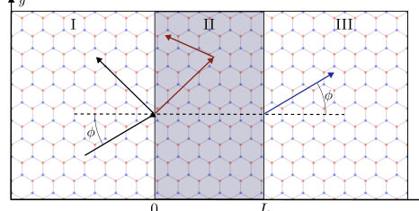
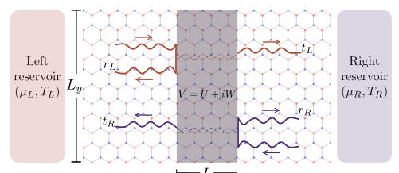
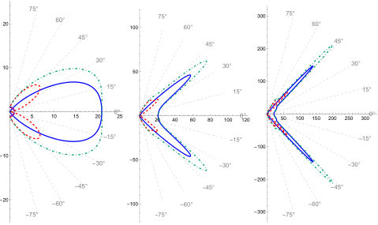
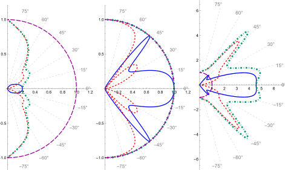

Authors: Avisekh Pal, Anju Sajan, Christopher Sumner, Eman Alharbi, Wolfgang Theis, Rohit Chikkaraddy
Type: experiment · Category: other · PDF: https://arxiv.org/pdf/2605.19498v1
Analysis basis: full PDF text, analyzed in chunks
Topic relevance: correlated / nonlocal dissipation 2/5 · quantum optics experiment 2/5 · non-equilibrium dynamics 1/5
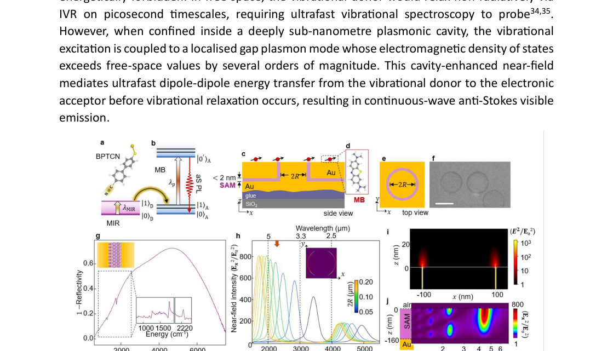
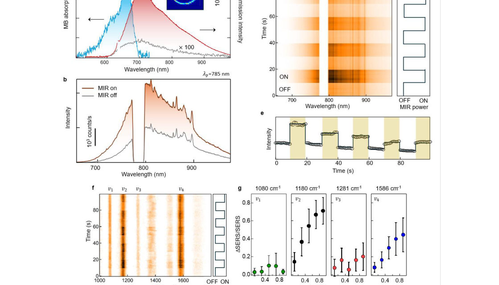
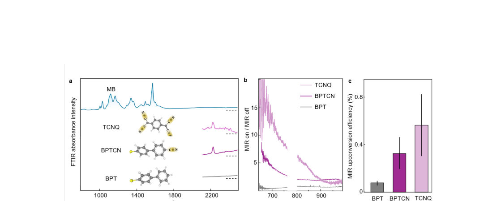
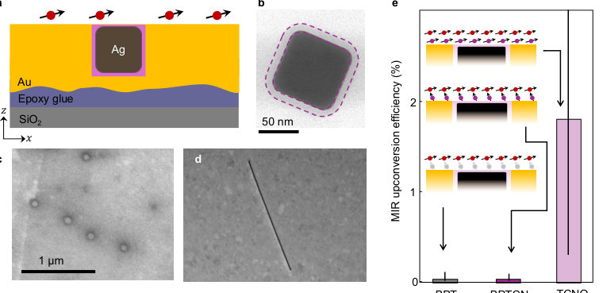
Summary. This paper demonstrates a way to convert mid-infrared light into visible light using tiny gold gaps between molecules. By using extreme plasmonic confinement, the researchers were able to transfer vibrational energy faster than it could be lost to heat, enabling efficient upconversion.
Why it may be interesting. This work demonstrates the manipulation of molecular relaxation pathways using extreme light-matter coupling, which is highly relevant to the study of open quantum systems and the control of energy dissipation in nanophotonic environments.
Main problem. Establishing a vibrational analogue to FRET in the mid-infrared (MIR) is difficult because ultrafast intramolecular vibrational redistribution (IVR) typically suppresses intermolecular energy transfer.
Main result. The researchers demonstrated MIR-to-visible upconversion with efficiencies exceeding 0.3% by using extreme plasmonic confinement in sub-2 nm nanogaps to redirect vibrational relaxation pathways.
Method. The team used a lithography-free, microsphere-assisted template-stripping process to create gold metal-insulator-metal (MIM) ring cavities and nanocubes, then performed SERS, FTIR, and photoluminescence spectroscopy.
Model / system. The system consists of metal-molecule-metal (MIM) nanogaps containing a self-assembled monolayer of vibrational donors (BPTCN or TCNQ) and electronic acceptors (Methylene Blue).
Key observables. Anti-Stokes photoluminescence (aS-PL), MIR-induced visible luminescence (MIRVAL) efficiency, SERS mapping, and vibrational mode correlation.
Important parameters / regimes. Sub-2 nm nanogaps, mode volumes approaching 10^-6 lambda^3, Purcell factors of 10^5-10^10, and the competition between transfer rate (Gamma_DA) and IVR (Gamma_IVR).
Assumptions / limitations. The upconversion is driven by non-equilibrium vibrational energy transfer rather than simple equilibrium heating.
Figures summary. Figure 1 shows energy-level diagrams for the donor-acceptor transfer process; other figures describe the fabrication of ring and nanocube structures and the experimental setup for light alignment.
Paper structure. The paper introduces the challenge of MIR energy transfer, describes the fabrication of plasmonic nanogaps, presents the experimental observation of upconversion, provides evidence against thermal heating, and concludes with a rate-equation model for the transfer efficiency.
Förster energy transfer underpins modern photonics, yet establishing an analogous vibrational pathway in the mid-infrared (MIR) remains highly challenging, as sub-picosecond intramolecular vibrational redistribution (IVR) suppresses intermolecular coupling. Here we demonstrate vibrational donor--acceptor transfer in the MIR and subsequent upconversion to visible luminescence enabled by sub-2 nm plasmonic nanogaps. The extreme lateral field confinement in metal--molecule--metal ring cavities defined by self-assembled molecular spacers couples efficiently to in-plane molecular dipoles. Continuous-wave MIR excitation selectively populates $-\mathrm{C}\equiv\mathrm{N}$ vibrational donors, and plasmon-enhanced near-field coupling transfers this energy to nearby electronic acceptors, generating anti-Stokes visible emission under low power densities. Upconversion efficiencies exceeding $0.3\%$ are observed, limited by competition between the plasmon-mediated transfer rate and IVR. These results show that extreme plasmonic confinement can redirect molecular vibrational relaxation pathways, opening a route toward vibrational nanophotonics, intermolecular interactions for bioimaging, and room-temperature MIR detection based on molecular degrees of freedom.
Authors: Ousmane Ly
Type: theory · Category: numerical methods · PDF: https://arxiv.org/pdf/2605.19670v1
Analysis basis: full PDF text, analyzed in chunks
Topic relevance: methods for driven-dissipative 2/5 · non-equilibrium dynamics 2/5
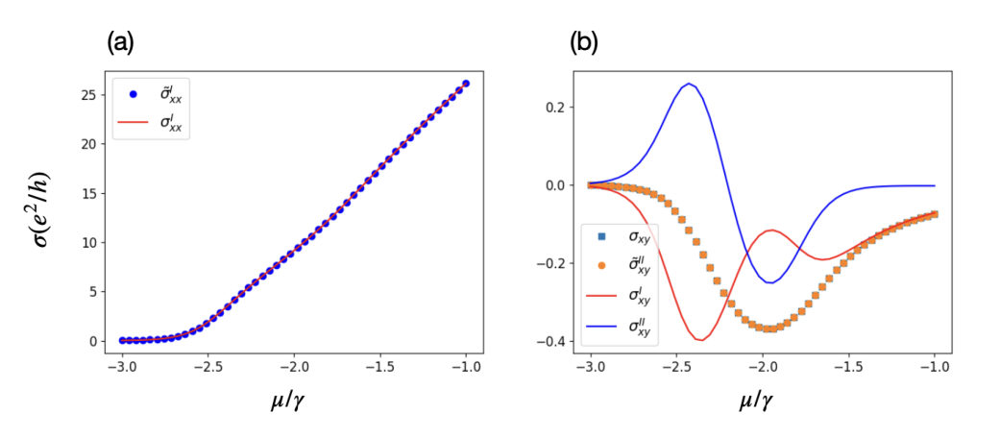
Summary. This paper introduces a new way to calculate transport properties in condensed matter systems without needing to numerically integrate over energy. By solving the energy integrals analytically, the method makes calculating Hall and longitudinal conductivities much faster and more accurate. This approach also helps resolve mathematical ambiguities in calculating responses in systems like flat bands.
Why it may be interesting. not directly relevant
Main problem. The evaluation of Kubo-Bastin transport coefficients is computationally expensive due to the requirement for dual numerical integration over both the energy spectrum and momentum space.
Main result. The author proposes an energy-integration-free decomposition that performs energy integrals analytically, drastically reducing computational cost and resolving ambiguities in Green's function limits.
Method. An analytical reformulation of the Kubo-Bastin formula by expanding it in the system's eigenbasis to eliminate the need for numerical energy integration.
Model / system. A 2D magnetic Rashba gas described by a Hamiltonian including hopping, magnetic exchange energy, and Rashba spin-orbit coupling.
Key observables. Transversal (Hall) conductivity (sigma_xy) and longitudinal conductivity (sigma_xx).
Important parameters / regimes. Chemical potential (mu), temperature (T), and infinitesimal broadening (eta).
Assumptions / limitations. The derivation assumes generic periodic systems where the Hamiltonian can be expressed in an eigenbasis; the relativistic correction term (sigma_III) is not evaluated.
Figures summary. Figure 1(a) shows longitudinal conductivity vs. chemical potential, while Figure 1(b) illustrates the separation of Hall conductivity into surface, sea, and overlap contributions.
Paper structure. The paper introduces the computational problem of Kubo-Bastin integration, proposes an analytical reformulation in the eigenbasis, validates the method using a 2D magnetic Rashba gas model via the py4mulas package, and compares the results against established numerical formulations.
Kubo formulae play a central role in modern spintronics and condensed matter physics, serving as the foundational ground for studying transport responses in the linear regime. In this work, we propose a reformulation of the widely used Kubo-Bastin decompositions that eliminates the need for numerical energy integration. By performing these integrations analytically for generic periodic systems, our approach drastically reduces computational cost and simplifies the evaluation of transport coefficients.
Authors: Nicolas Vidal-Silva, Alejandro O. Leon
Type: theory · Category: other · PDF: https://arxiv.org/pdf/2605.19998v1
Analysis basis: full PDF text, analyzed in chunks
Topic relevance: non-equilibrium dynamics 2/5 · spintronics-quantum-optics interface 2/5
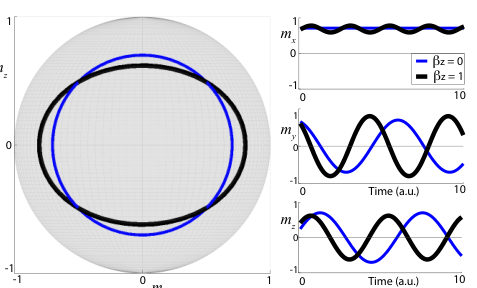
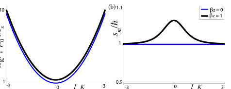
Summary. This paper quantifies how the non-circular rotation of magnetization (ellipticity) modifies spin and heat transport in magnetic insulators. It reveals that while ellipticity can suppress spin transport in easy-plane ferromagnets, it consistently enhances heat transport. The study also clarifies that transport enhancements in thin films are likely due to reduced scattering rather than ellipticity itself.
Why it may be interesting. not directly relevant
Main problem. Investigating how magnon ellipticity, caused by perpendicular magnetic anisotropy, affects the diffusive transport of spin and heat in easy-plane ferromagnets.
Main result. Ellipticity decreases magnon spin conductivity in easy-plane systems but increases magnon thermal conductivity in both easy- and hard-axis systems; the effect is significantly more pronounced in 2D than in 3D.
Method. The authors use the Landau-Lifshitz-Gilbert equation to derive dispersion relations and apply the Boltzmann transport equation within the relaxation time approximation and a perturbative expansion.
Model / system. The study focuses on magnetic insulators like Yttrium Iron Garnet (YIG) in easy-plane ferromagnets, modeled using a continuum description with Zeeman coupling, exchange interaction, and perpendicular magnetic anisotropy.
Key observables. Magnon spin conductivity, magnon thermal conductivity, magnon dispersion relation, and Spin Seebeck/Peltier coefficients.
Important parameters / regimes. Perpendicular magnetic anisotropy constant (beta_z), anisotropy field (G), external magnetic field (B), and dimensionality (2D vs 3D).
Assumptions / limitations. The analysis assumes a constant relaxation time, a linearized regime for small motions, and a quasi-equilibrium Bose-Einstein distribution due to fast scattering.
Figures summary. Figure 1 compares magnetization trajectories for circular and elliptical orbits; Figure 2 shows the magnon dispersion relation as a function of the wave vector for different anisotropy levels.
Paper structure. The paper begins with the derivation of the magnon dispersion and spin from the LLG equation, followed by the application of the Boltzmann transport equation to calculate conductivities, an analysis of dimensionality effects (2D vs 3D), and a discussion of the mathematical equivalence to parametric driving.
When a magnetic material hosts spin-wave excitations, or magnons, the local magnetization can rotate in circular or elliptical orbits, the latter arising naturally in the presence of magnetic anisotropies transverse to the equilibrium magnetization. This article investigates the diffusive transport of elliptical magnons in easy-plane ferromagnets. Our analysis starts with the derivation of the magnon dispersion relation and magnon spin from the Landau-Lifshitz-Gilbert equation with a perpendicular magnetic anisotropy. Then, using the Boltzmann transport equation in the relaxation time approximation and perturbation analysis, the magnon-spin and magnon thermal conductivities are obtained, quantifying the magnon transport in the insulator. Our calculations demonstrate that, in both three- and two-dimensional systems, the effects of ellipticity on magnon transport coefficients result in an enhancement or a decrease, depending on whether magnets with a easy or hard perpendicular-to-plane axis are considered, respectively. On the other hand, our results predict an enhancement of the magnon heat transport for both easy- and hard-axis magnetic systems. Our study supports previous works on magnon ellipticity and makes a step towards clarifying its effect on magnon transport properties.
Authors: Yong Tan, Qian Hu, Rui-Chun Xiao, Hang Zhou, Yuqing Huang, Zelalem Abebe Bekele, Yongcheng Deng, Xuan Qian, Qikang Gan, Lei Wang, Yang Ji, Ding-Fu Shao, Lixia Zhao, Kaiyou Wang
Type: both · Category: strongly correlated electrons · PDF: https://arxiv.org/pdf/2605.19238v1
Analysis basis: full PDF text, analyzed in chunks
Topic relevance: spintronics-quantum-optics interface 2/5
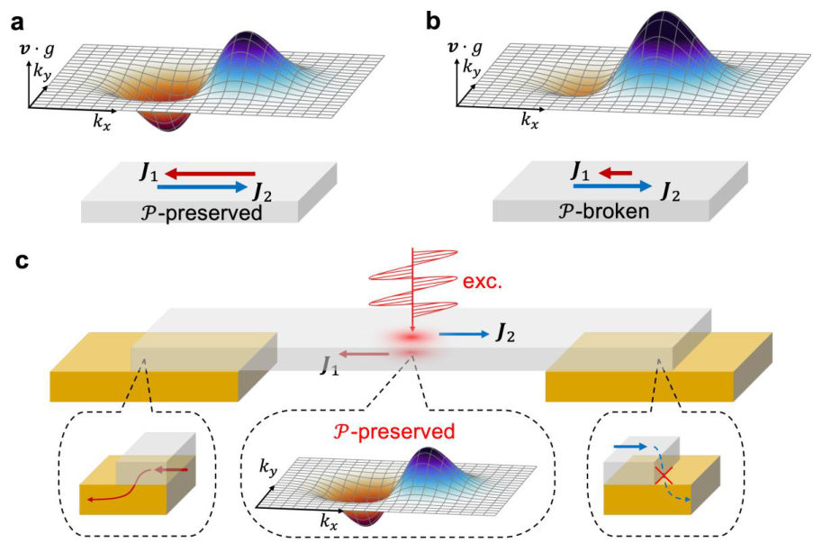
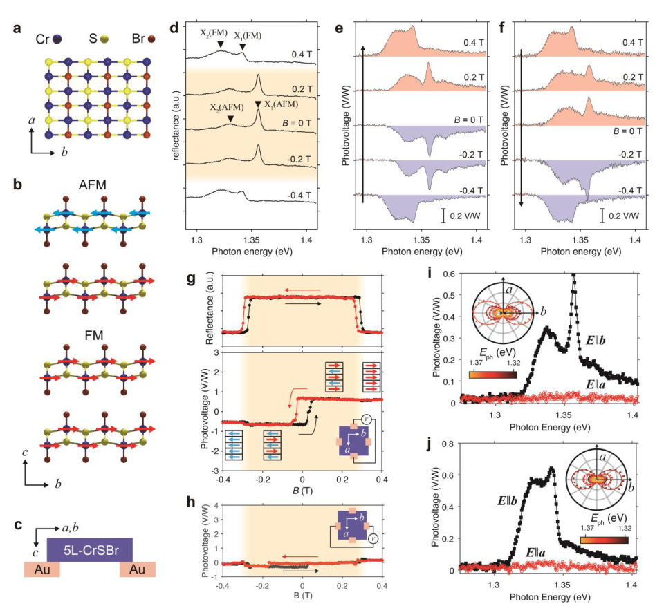
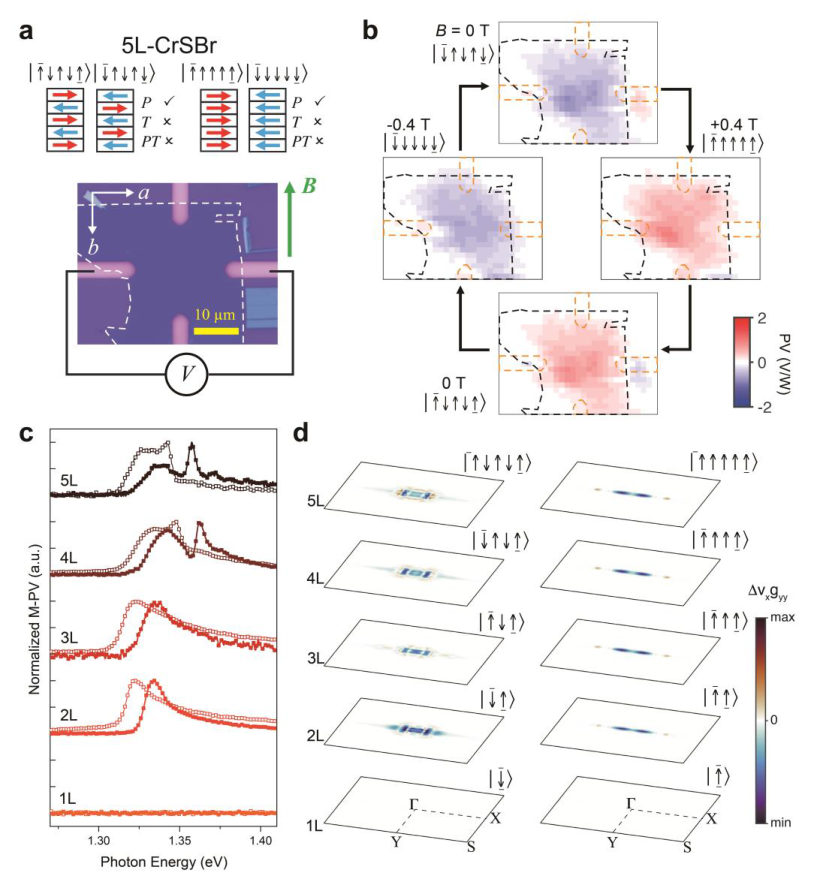
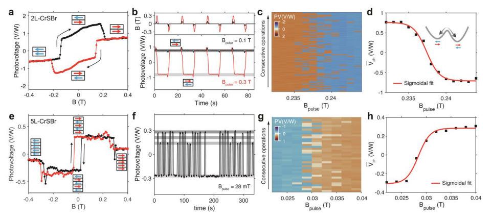
Summary. This paper demonstrates a way to harvest 'hidden' quantum geometric effects in centrosymmetric 2D magnets by using a non-local setup to separate compensating currents. This discovery expands the range of materials usable for quantum geometric physics and enables new types of nonvolatile, programmable, and probabilistic photodetectors.
Why it may be interesting. not directly relevant
Main problem. The study addresses how to detect the 'hidden' quantum metric response in centrosymmetric 2D magnets, where the macroscopic quantum metric dipole is predicted to vanish due to inversion symmetry.
Main result. The researchers successfully used a non-local photovoltaic scheme to decouple and detect compensating currents, revealing a hidden quantum metric response that enables reconfigurable, nonvolatile, and probabilistic photodetection.
Method. The study combines experimental non-local photovoltaic spectroscopy and spatial mapping with first-principles DFT calculations and Wannier-based modeling to probe the quantum geometry of CrSBr.
Model / system. The physical system is a 2D magnetic semiconductor, CrSBr, in various thicknesses (up to 5 layers), capable of transitioning between antiferromagnetic and ferromagnetic states via external magnetic fields.
Key observables. Photovoltage (PV), photocurrent, magnetoreflectance spectra, and the quantum metric dipole (QMD).
Important parameters / regimes. Magnetic states (AFM vs. FM), layer thickness (2L to 5L), and magnetic field strength (B_pulse).
Assumptions / limitations. Calculations for quantum metric distributions assume specific interband transition energies (1.30 eV and 0.9 eV) corresponding to the first prominent BPVE peaks.
Figures summary. Figure 1 illustrates the vanishing vs. finite quantum metric current and the experimental non-local setup. Figure 2 shows the detection of the response across magnetic states. Figure 4 demonstrates the probabilistic and programmable switching of photoresponsivity and the sigmoidal tuning of photovoltage.
Paper structure. The paper introduces the symmetry challenge of vanishing QMD, presents the non-local experimental scheme in CrSBr, demonstrates the detection of the hidden response in different magnetic phases, and concludes with applications in probabilistic sensing and computing.
The quantum geometry of Bloch wavefunctions underpins a wealth of emergent phenomena in quantum materials. Its imaginary part, the Berry curvature, has long been recognized as a key source for hallmark effects such as quantum Hall and topological phenomena, etc. The real part of quantum geometry, the quantum metric, has recently garnered considerable attention due to predictions of a range of unconventional nonlinear and nonequilibrium responses. Such responses usually vanish in centrosymmetric systems, largely restricting relevant studies to non-centrosymmetric materials. Here we challenge this convention by revealing that the vanished quantum metric response can survive in a hidden form. Using a non-local photovoltaic scheme in a layered magnetic semiconductor, we spatially separate mutually compensating photocurrents and thereby detect such hidden quantum metric response. We demonstrate this effect across distinct magnetic states and down to the ultrathin limit. Moreover, we realize reconfigurable, nonvolatile and probabilistic photodetection enabled by the quantum metric response. These results not only fundamentally expand the material landscape for quantum geometric physics, but also open new gateway to harvest the quantum geometric contributions for state-of-the-art nonvolatile reprogrammable sensing and computing applications.
Authors: Daniel A. Bonilla, Juan A. Cañas, J. C. Pérez-Pedraza, A. Martín-Ruiz
Type: theory · Category: other · PDF: https://arxiv.org/pdf/2605.19907v1
Analysis basis: full PDF text, analyzed in chunks
Topic relevance: non-equilibrium dynamics 2/5




Summary. This paper explores how adding gain or loss to a graphene barrier can tune its thermoelectric properties. It shows that while gain increases electrical current, loss is actually better for improving energy efficiency (ZT) by suppressing heat flow. The study provides a way to control transport features without changing the physical geometry of the device.
Why it may be interesting. The paper explores the physics of open quantum systems and non-unitary scattering, demonstrating how non-Hermitian dynamics can be used to control transport properties and break fundamental symmetries like gauge invariance.
Main problem. The study investigates how non-Hermitian (complex) potential barriers in graphene affect thermoelectric transport, specifically focusing on the breakdown of flux conservation, gauge invariance, and the tuning of the thermoelectric figure of merit.
Main result. The imaginary part of the barrier redistributes angular flux and breaks the R+T=1 identity; while gain (W>0) enhances conductance, loss (W<0) is more effective at suppressing thermal conductance, thereby maximizing the thermoelectric figure of merit (ZT).
Method. The authors use the Landauer-Büttiker scattering framework and an exact analytical solution of the 2D Dirac-Weyl equation to calculate linear-response transport coefficients.
Model / system. A monolayer graphene sheet featuring a finite rectangular complex potential barrier (n-p-n type) where the potential V = U + iW includes an imaginary component representing gain or loss.
Key observables. Electrical conductance, thermal conductance, Seebeck coefficient, thermoelectric figure of merit (ZT), transmission (T), reflection (R), and the flux-balance term (Gamma).
Important parameters / regimes. Real barrier height (U), imaginary potential strength (W), chemical potential (mu), temperature (T), barrier width (L), and voltage/temperature bias partition (eta).
Assumptions / limitations. The complex potential is treated as a phenomenological effective description of environmental coupling or unresolved channels rather than a microscopic model; lattice thermal conductance is not included.
Figures summary. Schematic of the setup; polar plots showing angular dependence of T, R, and flux-balance; plots of transport quantities vs. chemical potential and W; and temperature dependence of thermoelectric coefficients.
Paper structure. The paper introduces the non-Hermitian Dirac-Weyl problem, derives the scattering matrix and flux-balance relations, analyzes the breakdown of gauge invariance and Onsager relations, and concludes with the tuning of thermoelectric performance and temperature-dependent behavior.
We investigate thermoelectric transport in monolayer graphene across a finite complex barrier within a Landauer scattering framework. Solving the Dirac-Weyl problem exactly, we show that the imaginary part of the barrier renders the scattering matrix nonunitary and replaces the usual Hermitian flux conservation by a generalized flux-balance relation determined by the net gain or loss inside the barrier. In the Hermitian limit, the standard graphene $n$-$p$-$n$ barrier behavior is recovered, including perfect transmission at normal incidence and Fabry-Perot-type resonances. For a finite imaginary part, however, the same resonant channels are selectively attenuated or amplified, which significantly modifies both the angular response and the conductance profile. We further show that the lead-resolved conductances become dependent on the bias partition, providing a direct signature of the breakdown of gauge invariance in the effective two-terminal response. At finite temperature, the exact linear-response coefficients reveal a clear trade-off controlled by the imaginary part of the barrier: gain enhances both the electrical and thermal conductances, whereas loss suppresses the thermal conductance more efficiently and yields the largest thermoelectric figure of merit within the parameter range considered. These results demonstrate that complex barriers extend the range of transport behaviors accessible in graphene beyond the usual Hermitian $n$-$p$-$n$ junction. They also suggest a practical interpretation of the imaginary potential as an effective reduced description of unresolved source-sink channels or additional probes coupled to the device, particularly when a fully microscopic model of the environment is not available.
Authors: Joshua Althüser, Götz S. Uhrig
Type: theory · Category: strongly correlated electrons · PDF: https://arxiv.org/pdf/2605.20059v1
Analysis basis: full PDF text, analyzed in chunks
Topic relevance: Keldysh / 2PI / non-Gaussian methods 2/5
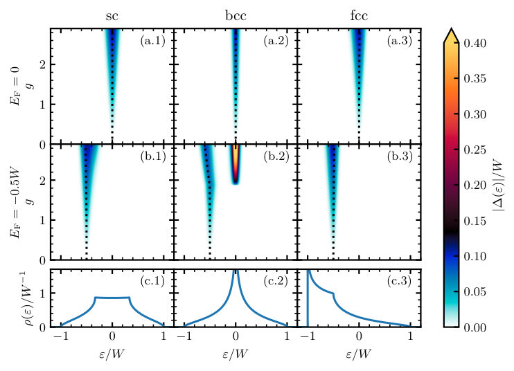
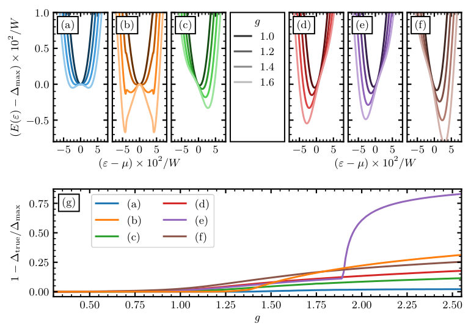
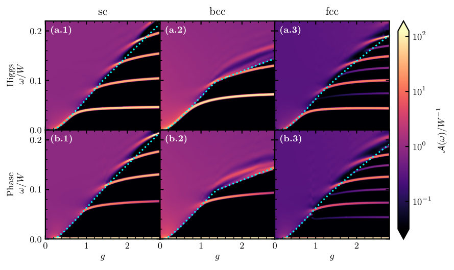
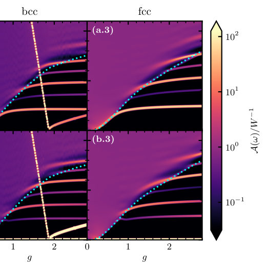
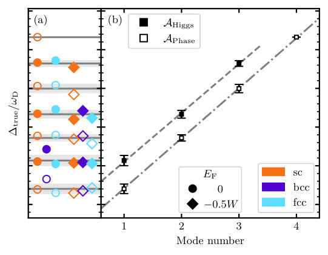
Summary. This paper demonstrates that strong-coupling superconductivity leads to the emergence of new, secondary collective excitations beyond the standard Higgs and Goldstone modes. These modes appear at regular energy intervals and are a universal feature of the intermediate-to-strong coupling regime, largely independent of the specific lattice geometry.
Why it may be interesting. The discovery of universal, predictable secondary modes and the nodal structure of their eigenoperators (reminiscent of the Hydrogen problem) provides deep insight into the many-body dynamics and collective oscillations of strongly coupled fermionic systems.
Main problem. The study investigates the emergence and properties of secondary collective excitations (both phase and amplitude modes) in superconductors within the intermediate-to-strong-coupling regime.
Main result. The authors find that increasing coupling strength causes the Higgs mode to detach from the quasiparticle continuum and leads to the appearance of additional, long-lived secondary modes that follow a universal energy spacing pattern.
Method. The researchers use the iterated equations of motion (iEoM) approach and a continuous unitary transformation (CUT) derived Hamiltonian to compute response functions and spectral functions.
Model / system. The model consists of isotropic superconductors on various 3D Bravais lattices (sc, bcc, fcc) featuring an energy-transfer-dependent effective electron-electron interaction that accounts for retardation effects.
Key observables. Spectral functions (Higgs and Phase), gap function, density of states (DOS), quasiparticle dispersion, and eigenoperator amplitudes.
Important parameters / regimes. Coupling strength (g), Fermi level (Ef), bandwidth (W), and Debye energy (omega_D).
Assumptions / limitations. The study assumes a single Einstein phonon branch, neglects Coulomb interactions (using the Morel-Anderson pseudopotcal instead), and assumes expectation values are real.
Figures summary. Figures show the gap function and DOS across different lattices, quasiparticle dispersion and mode detachment, spectral functions for various lattices, and the nodal/amplitude structure of the eigenoperators.
Paper structure. The paper introduces the interaction model, describes the iEoM method, analyzes the weak-to-strong coupling transition, examines the impact of lattice geometry and particle-hole symmetry, and concludes with an analysis of the internal nodal structure of the secondary modes.
Considering systematically derived energy-transfer-dependent effective electron-electron interactions leads to the appearance of secondary phase and amplitude modes in isotropic superconductors in the intermediate-to-strong-coupling regime. We study the implications of such interactions on Bravais lattices by computing the corresponding response functions using the iterated equations of motion (iEoM) approach. In the weak-coupling regime, we find the conventional, primary amplitude and phase modes at $ω=2Δ$ and $ω=0$, respectively. For intermediate coupling, the amplitude mode detaches from the quasiparticle continuum towards lower energies. Increasing the coupling further leads to additional, long-lived secondary collective excitations below the continuum. This phenomenon is largely independent of the underlying lattice and the specific Fermi level. The amplitude and phase modes couple if the system is not particle-hole symmetric. Additionally, we extend the method to compute eigenoperators, i.e., linear combinations of operators that excite each secondary mode specifically. We identify nodal structures in the coefficients for these eigenoperators reminiscent of wave functions in the Hydrogen problem.
Authors: I. A. Aleksandrov, M. A. Dorodnyi, E. D. Akimkina
Type: theory · Category: other · PDF: https://arxiv.org/pdf/2605.19086v1
Analysis basis: full PDF text, analyzed in chunks
Topic relevance: non-equilibrium dynamics 2/5
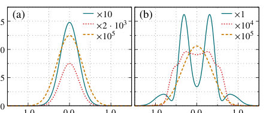
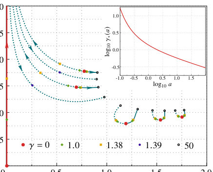
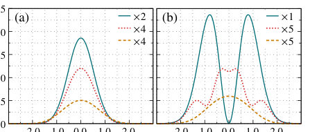
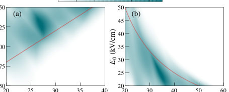
Summary. This paper shows that interference fringes in particle production spectra do not require complex, oscillating electric fields but can arise from smooth, single-lobe pulses. By identifying a transition in complex-time turning points, the authors provide a universal mechanism applicable to both vacuum pair production and gapped graphene.
Why it may be interesting. not directly relevant
Main problem. Investigating whether spectral interference fringes in particle production require structured, subcycle electric field pulses or can arise from smooth, single-lobe pulses.
Main result. The authors demonstrate that pronounced spectral fringes can emerge from smooth, carrier-free pulses due to a 'turning-point dominance transition' where subleading complex-time saddle points interfere.
Method. The study uses exact numerical solutions of the Quantum Kinetic Equations, semiclassical WKB/turning-point analysis, and complex-time analytic continuation.
Model / system. The paper analyzes (3+1)D scalar and spinor QED (Schwinger pair production) and a (2+1)D massive Dirac model representing gapped graphene on SiC.
Key observables. Longitudinal momentum spectra, energy-resolved carrier distributions, and the Keldysh parameter.
Important parameters / regimes. Keldysh parameter (gamma), pulse duration (tau), peak electric field (E0), and the turning-point dominance threshold (gamma*).
Assumptions / limitations. The validity of the WKB/semiclassical approximation and the assumption that the vector potential is a regular function of complex time.
Figures summary. Figure 1 compares momentum distributions for Gaussian and deformed pulses showing fringe emergence; Figure 2 illustrates complex-time turning point trajectories; Figure 3 shows momentum distributions in the Dirac model; Supplementary figures show energy-resolved spectra and robustness to zero-area pulse configurations.
Paper structure. The paper introduces the problem of spectral fringes, presents numerical results in QED, provides a semiclassical explanation via turning-point analysis, extends the mechanism to Dirac materials, and discusses experimental detection via pump-probe spectroscopy.
Spectral fringes in Schwinger pair creation are usually attributed to structured driving, such as carrier oscillations, pulse trains, or multiple creation events. We show that pronounced fringes can arise even for smooth, carrier-free single-lobe electric-field pulses. Two bell-shaped profiles that are nearly indistinguishable in real time - a Gaussian pulse and a weakly deformed variant - produce qualitatively different longitudinal momentum spectra in the nonadiabatic crossover: the Gaussian spectrum remains smooth, whereas the deformed pulse develops strong fringes as the Keldysh parameter approaches unity. Exact numerical solutions in scalar and spinor QED agree with a semiclassical turning-point analysis and trace the effect to a turning-point dominance transition, where the leading saddle becomes irrelevant and subleading contributions interfere. We demonstrate the same mechanism in a solid-state Schwinger analog described by a gapped two-dimensional Dirac model relevant to epitaxial graphene on SiC, and discuss an energy-resolved pump-probe route to observing the predicted modulation.
Authors: Ritsuki Ito, Kazuya Mameda, Naoki Yamamoto
Type: theory · Category: other · PDF: https://arxiv.org/pdf/2605.19817v1
Analysis basis: full PDF text, analyzed in chunks
Topic relevance: Keldysh / 2PI / non-Gaussian methods 2/5
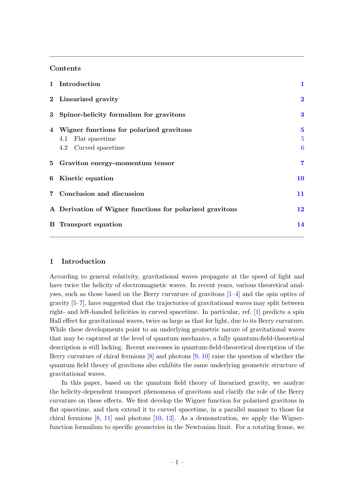
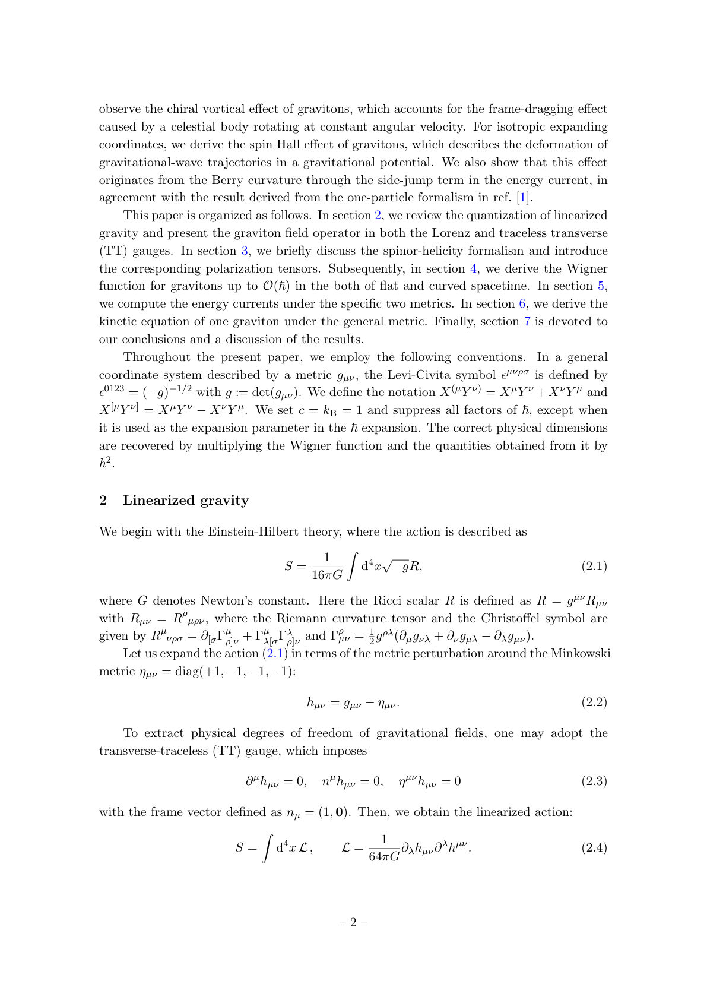
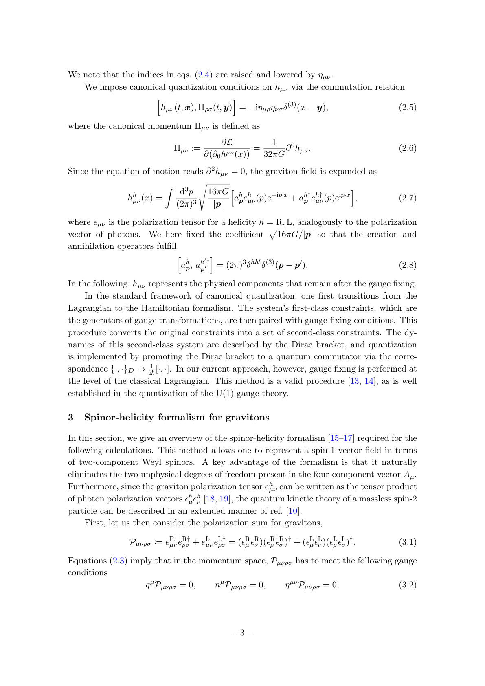
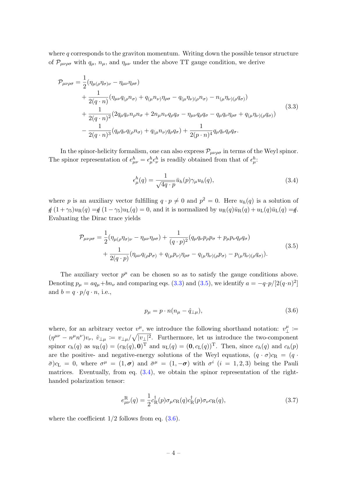
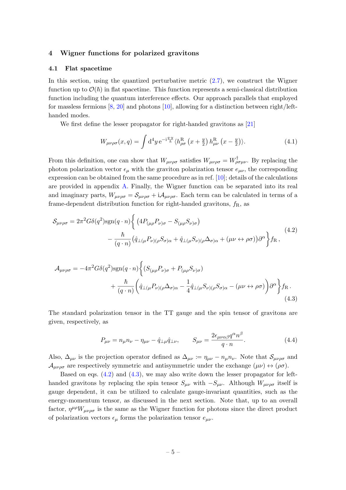
Summary. This paper establishes a quantum field theoretic framework to show that gravitons experience a spin Hall effect in curved spacetime. It identifies that the Berry curvature of gravitons leads to a helicity-dependent splitting of energy currents, which is twice as large as the effect seen in photons. This provides a fundamental link between quantum field theory and the geometric transport properties of gravitational waves.
Why it may be interesting. not directly relevant
Main problem. The study aims to provide a quantum field theoretic description of the geometric nature of gravitons, specifically investigating the emergence of Berry curvature and the spin Hall effect in curved spacetime.
Main result. The authors demonstrate that gravitons exhibit a spin Hall effect in curved spacetime due to helicity-dependent Berry curvature, with an energy Hall current splitting magnitude exactly twice that of photons.
Method. The researchers use the Wigner function formalism and quantum kinetic theory applied to the linearized Einstein-Hilbert action, employing a semi-classical expansion up to O(hbar).
Model / system. The system consists of massless spin-2 gravitons (right- and left-handed helicity states) propagating in a curved spacetime background, modeled using the quantum field theory of linearized gravity in the transverse-traceless gauge.
Key observables. Berry curvature, spin Hall energy current, chiral vortical effect, and the graviton energy-momentum tensor.
Important parameters / regimes. Graviton helicity (spin-2), momentum (q), Planck's constant (hbar) expansion, fluid vorticity, and gravitational potential.
Assumptions / limitations. The analysis assumes the validity of linearized gravity and the Einstein-Hilbert action, focuses on the O(hbar) semi-classical limit, and utilizes a weak-gravity/Newtonian approximation for specific demonstrations.
Paper structure. The paper begins with the construction of the graviton Wigner function, proceeds to derive the energy-momentum tensor and identify anomalous currents like the spin Hall effect, and concludes with a technical appendix detailing the algebraic expansion of the Wigner function and Berry curvature.
Based on quantum field theory of linearized gravity, we formulate the Wigner function for right- and left-handed gravitons. By applying the Wigner transformation to the second-order metric perturbations in the graviton energy-momentum tensor obtained from the Einstein-Hilbert action, we demonstrate the emergence of the spin Hall effect of gravitons in curved spacetime. This effect originates from the Berry curvature of gravitons, which has opposite signs for right- and left-handed helicities, and leads to a helicity-dependent splitting of the graviton energy Hall current. The magnitude of this splitting is found to be exactly twice that of the corresponding spin Hall current for photons.
Authors: S. Solihin, Ahmad R. T. Nugraha, Muhammad Aziz Majidi
Type: theory · Category: strongly correlated electrons · PDF: https://arxiv.org/pdf/2605.20021v1
Analysis basis: full PDF text, analyzed in chunks
Topic relevance: spintronics-quantum-optics interface 2/5
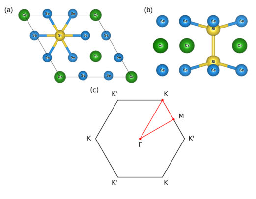
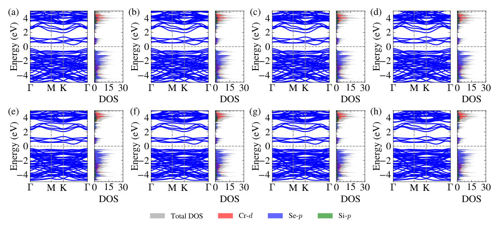
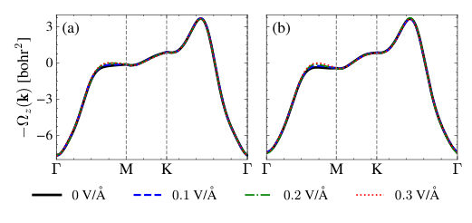
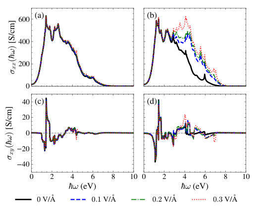
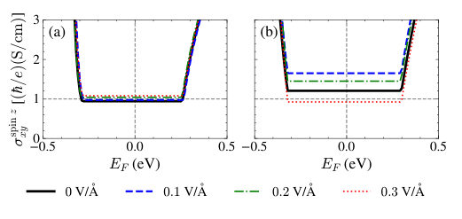
Summary. This paper investigates how electric fields can tune the spin properties of a CrSiSe3 monolayer without destabilizing its electronic structure. It demonstrates that while the charge-based properties are robust, the spin Hall conductivity and magnons can be actively controlled. This makes the material a promising candidate for stable, field-effect controlled spintronic and magnonic devices.
Why it may be interesting. not directly relevant
Main problem. The study seeks to find 2D van der Waals magnets that satisfy the dual requirement of robust charge stability and highly tunable spin responses for spintronic applications.
Main result. The researchers discovered a 'beautiful paradox' where the charge sector (band gap, Berry curvature, and optical conductivity) remains robust against electric fields, while the spin sector (spin Hall conductivity and magnon excitations) is highly tunable.
Method. First-principles calculations using Density Functional Theory (DFT) with GGA+U and DFT-D3 corrections, combined with Wannier interpolation and the TB2J package for magnetic interactions.
Model / system. A strained CrSiSe3 monolayer (2.5% and 5.0% biaxial tensile strain) subjected to out-of-plane external electric fields up to 0.3 V/A.
Key observables. Indirect band gap, charge and spin Berry curvature, spin Hall conductivity, optical conductivity tensor, Magneto-Optical Kerr Effect (MOKE) spectra, and magnon dispersion.
Important parameters / regimes. Electric field strengths up to 0.3 V/A, tensile strain of 2.5% and 5.0%, and photon energies up to approximately 4 eV.
Assumptions / limitations. The monolayer is assumed to be on an insulating substrate with a refractive index of n=2; the use of the independent-particle approximation for transport properties.
Figures summary. Fig 1: Atomic structure; Fig 2: Spin-polarized band structures and DOS; Fig 4: Optical conductivity spectra; Fig 7: Kerr rotation and ellipticity spectra; Fig 8: Magnon dispersion evolution.
Paper structure. The paper introduces the material and problem, details the computational methodology, analyzes the stability of the electronic/charge sector, investigates the tunability of the spin/topological sector, explores the modulation of magnons, and concludes with the implications for spintronics.
Integrating two-dimensional van der Waals magnets into field-effect spintronic devices requires robust charge stability and tunable spin responses. In this study, we investigate the electronic, topological, magnonic, and magneto-optical properties of the strain-engineered ferromagnetic $\text{CrSiSe}_3$ monolayer under out-of-plane external electric fields by using first-principles calculations. We find that for this material, the intrinsic charge sector, including the indirect band gap, charge Berry curvature, optical conductivities, and magneto-optical Kerr effect spectra, exhibits exceptional robustness against applied fields up to 0.3 V/$Å$. Conversely, the spin degrees of freedom demonstrate highly sensitive tunability. Electrostatic gating significantly modulates the spin Berry-like curvature, driving a non-monotonic enhancement in the spin Hall conductivity. Furthermore, external fields effectively tune collective magnon excitations by modifying microscopic Heisenberg exchange interactions. Such coexistence of robust charge immunity and flexible spin manipulation establishes the strained $\text{CrSiSe}_3$ monolayer as a promising platform for stable spintronic devices.
Authors: Kazuki Kamada, Keisuke Shinokita, Fanyu Zeng, Ryo Kitaura, Kenji Watanabe, Takashi Taniguchi, Alexander Paarmann, Masahiro Shibuta, Takashi Kumagai, Jun Nishida
Type: experiment · Category: other · PDF: https://arxiv.org/pdf/2605.19408v1
Analysis basis: full PDF text, analyzed in chunks
Topic relevance: non-equilibrium dynamics 2/5
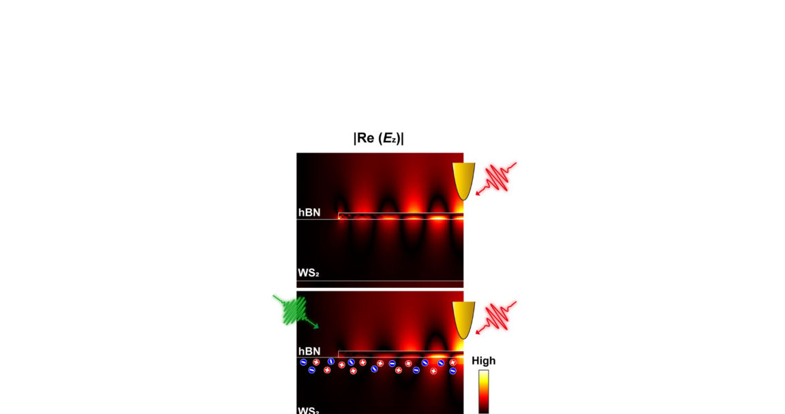
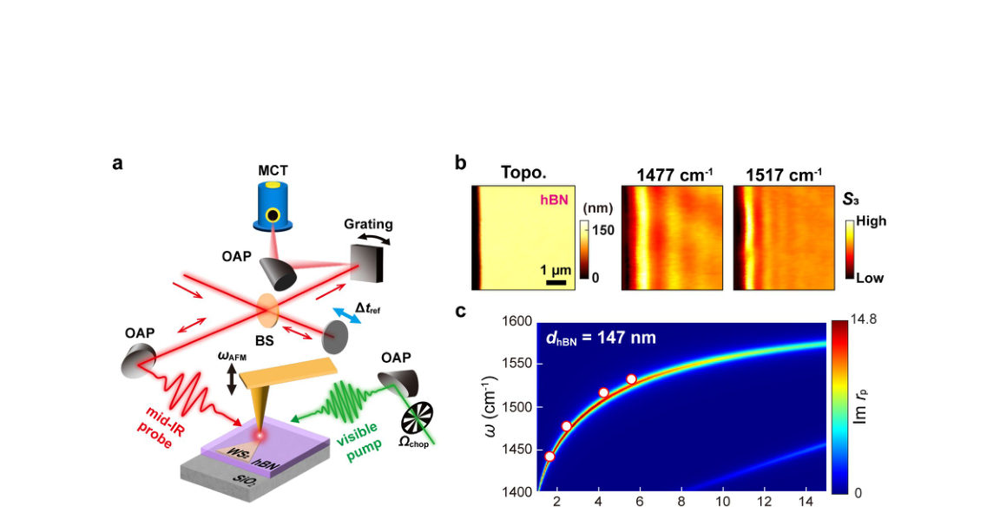
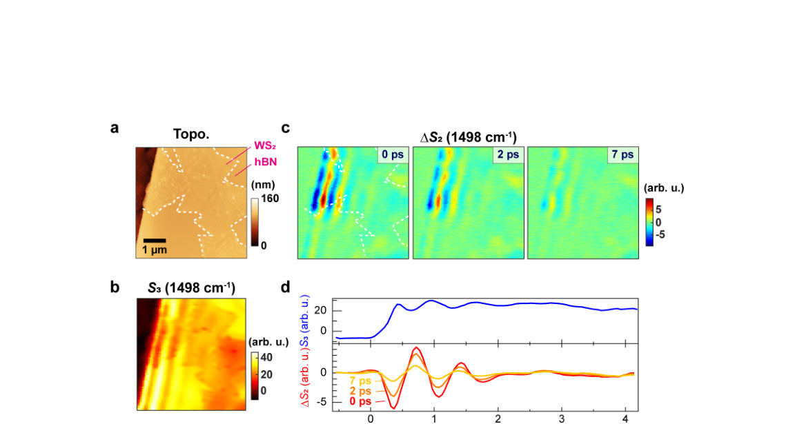
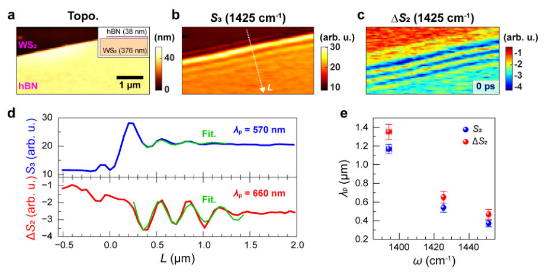
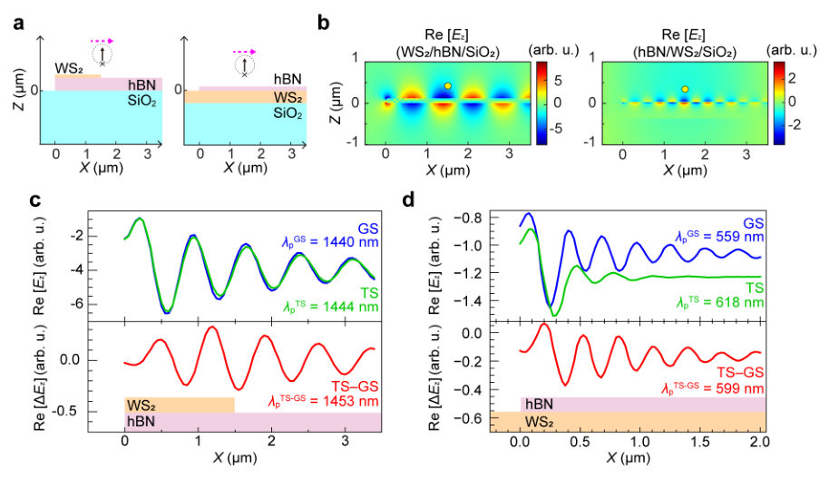
Summary. This paper presents a new ultrafast nano-imaging technique that overcomes the temporal-frequency trade-off in infrared microscopy. By using grating-based filtering, the authors successfully visualized how light-induced carriers in a WS2 layer can transiently control the properties of hyperbolic phonon polaritons in adjacent hBN.
Why it may be interesting. not directly relevant
Main problem. Achieving simultaneous femtosecond temporal, nanoscale spatial, and fine spectral resolution to image and control the ultrafast dynamics of Hyperbolic Phonon Polaritons (HPhPs) in the infrared region.
Main result. The researchers demonstrated the direct observation of transient modulation of HPhPs in hBN/WS2 heterostructures, showing that photocarrier generation in WS2 can modulate the amplitude and wavelength of the polaritonic field.
Method. Ultrafast infrared scanning near-field optical microscopy (s-SNOM) using a grating-based spectral filtering technique and a phase-resolved pump-probe scheme.
Model / system. A van der Waals heterostructure consisting of WS2 (either CVD-grown bilayer or thick transferred layer) on hBN/SiO2, where visible-light pump excitation generates photocarriers in the WS2 layer.
Key observables. Near-field interference fringes, polaritonic wavelength (lambda_p), polaritonic amplitude, group velocity (vg), and differential near-field signal (Delta S2).
Important parameters / regimes. Mid-infrared probe frequencies (1425-1517 cm^-1), temporal resolution (~150 fs), carrier lifetime (~18 ps), and group velocity (~1.02 um/ps).
Assumptions / limitations. The photoexcited WS2 is modeled using a Drude-type dielectric response; the AFM tip is modeled as a dipole excitation source.
Figures summary. Fig 1: Schematic of ultrafast HPhP control. Fig 2: Experimental setup and HPhP dispersion in hBN. Fig 3: Pump-probe imaging in WS2/hBN showing transient states. Fig 4: Pump-probe imaging in hBN/WS2 showing wavelength shifts and fringe profiles.
Paper structure. The paper introduces the challenge of ultrafast polariton imaging, describes the grating-coupled s-SNOM experimental setup, validates the technique via dispersion mapping, demonstrates transient modulation in different heterostructure configurations, and provides FEM simulations to support the observed dielectric-driven dynamics.
Manipulating nanoscale light-matter interactions on ultrafast time scales is indispensable for future polaritonic devices. Hyperbolic phonon polaritons (HPhPs) in van der Waals materials enable deep subwavelength confinement of electromagnetic fields in the infrared region and long-distance propagation of polaritonic waves. However, achieving ultrafast imaging and optical control of HPhPs remains a major challenge. Here, we demonstrate the direct observation of transient modulation of HPhPs induced by local photocarrier generation in WS$_2$/hBN heterostructures using ultrafast infrared scanning near-field optical microscopy. We implement grating-based spectral filtering of broadband near-field scattering to simultaneously achieve nanoscale and femtosecond spatiotemporal resolution together with fine spectral selectivity. This ultrafast nano-imaging technique reveals that photocarriers in WS$_2$ modulate the polaritonic field amplitudes and wavelengths of HPhPs in hBN. Theoretical simulations corroborate that these changes arise from photoinduced changes in WS$_2$ dielectric properties. This approach offers a versatile platform for exploring ultrafast polaritonic dynamics at the nanoscale.
Authors: Suyeong Jin, Jung-Wuk Hong, Alexandre F. Fonseca
Type: theory · Category: other · PDF: https://arxiv.org/pdf/2605.20017v1
Analysis basis: full PDF text, analyzed in chunks
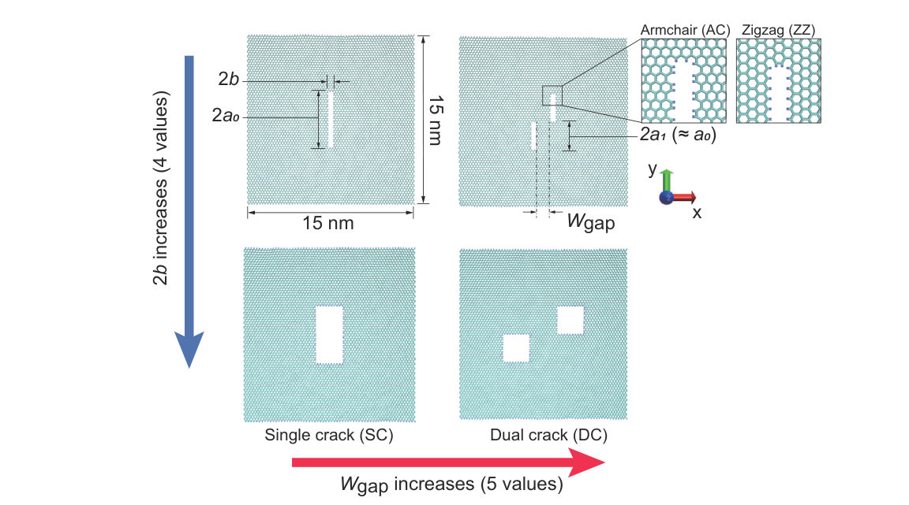
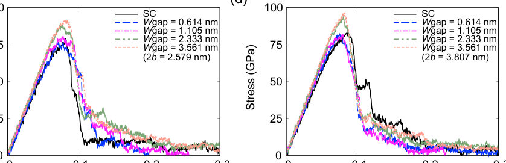
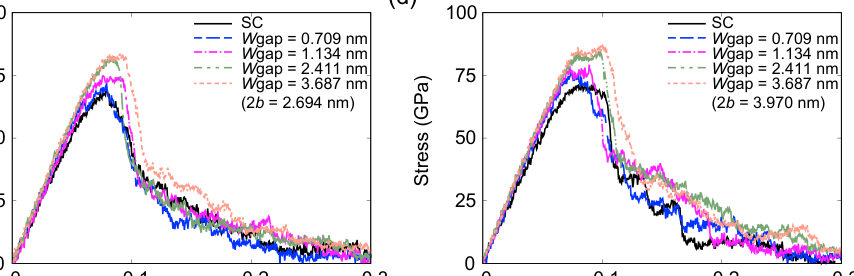
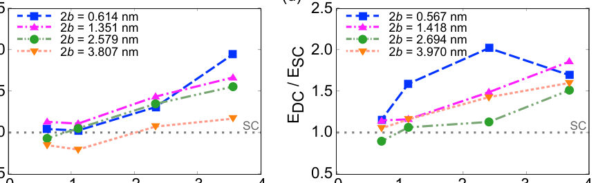
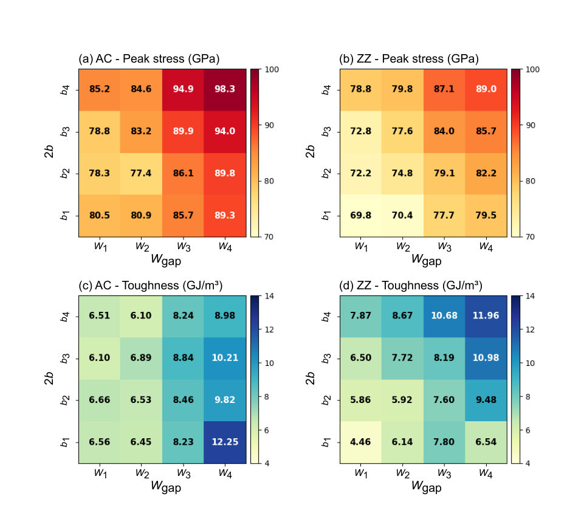
Summary. This paper uses molecular dynamics to show that the width of cracks in graphene plays a crucial role in determining fracture toughness. By optimizing crack width and spacing, the toughness of graphene can be significantly enhanced, transitioning from brittle crack coalescence to a more ductile-like fracture mode.
Why it may be interesting. not directly relevant
Main problem. The study investigates how the coupled effects of crack width and inter-crack spacing influence the fracture behavior, strength, and toughness of graphene.
Main result. Increasing crack width amplifies the sensitivity of mechanical properties to crack spacing, where wider cracks promote delayed ligament rupture and a twofold increase in toughness compared to single-crack systems.
Method. Molecular Dynamics (MD) simulations were performed using the ReaxFF interatomic potential and the LAMMPS package under uniaxial tensile loading.
Model / system. The system consists of graphene sheets (armchair and zigzag orientations) containing either a single crack or two parallel cracks with varying widths and inter-crack gaps.
Key observables. Peak stress, fracture strain, toughness (energy absorption), and normalized toughness/fracture-strain ratios.
Important parameters / regimes. Crack width (2b), inter-crack spacing (W_gap), and lattice chirality (Armchair vs. Zigzag).
Assumptions / limitations. The cracks are hydrogen-passivated to stabilize dangling bonds; the simulation uses a specific engineering strain rate of 10^8 s^-1.
Figures summary. Figure 1 shows the geometry of the crack configurations; Figures 2 and 3 present stress-strain curves for AC and ZZ graphene; Figure 4 plots toughness as a function of gap size; Figure 5 provides heat maps of peak stress and toughness.
Paper structure. The paper introduces the problem of crack geometry, describes the MD simulation setup and ReaxFF model, presents results on stress-strain relations and toughness for different chiralities, and concludes with a design map for crack geometry.
The interaction between neighboring cracks has been shown to strongly influence the fracture behavior of graphene. While previous studies focused primarily on crack spacing, the role of crack width remains poorly understood. Here, computational simulations are performed to investigate the coupled effects of crack width and inter-crack spacing $(W_\text{gap})$ on the tensile response of graphene containing parallel cracks. The results show that increasing crack width amplifies the sensitivity of mechanical properties to crack spacing, leading to significant enhancement of peak stress, fracture strain, and toughness at sufficiently large $W_\text{gap}$. For narrow cracks, crack coalescence dominates and causes brittle failure. In contrast, wider cracks promote delayed ligament rupture, increased energy absorption and ductile-like fracture behavior. The normalized toughness and fracture strain exceed those of equivalent single-crack systems by more than twofold. A crack-geometry design map is proposed to identify regimes of crack coalescence, independent propagation, and enhanced toughness.
Authors: Alexander Kazakov, Gauthier Krizman, Valentine V. Volobuev, Michał Szot, Wojciech Wołkanowicz, Chang-Woo Cho, Benjamin A. Piot, Tomasz Wojciechowski, Gunther Springholz, Tomasz Wojtowicz, Tomasz Dietl
Type: experiment · Category: disordered systems and neural networks · PDF: https://arxiv.org/pdf/2605.19025v1
Analysis basis: full PDF text, analyzed in chunks
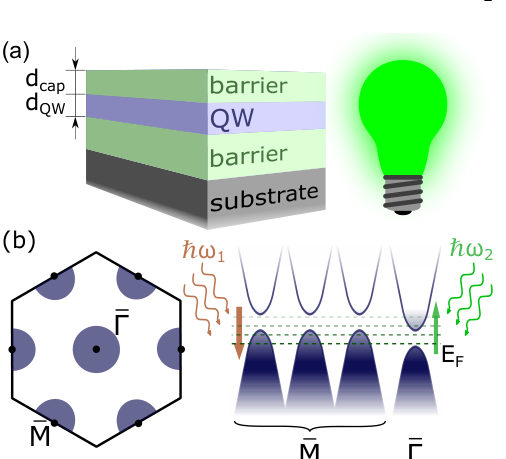
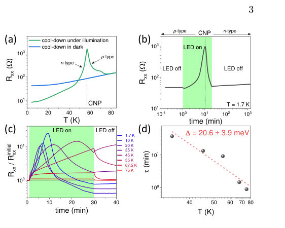
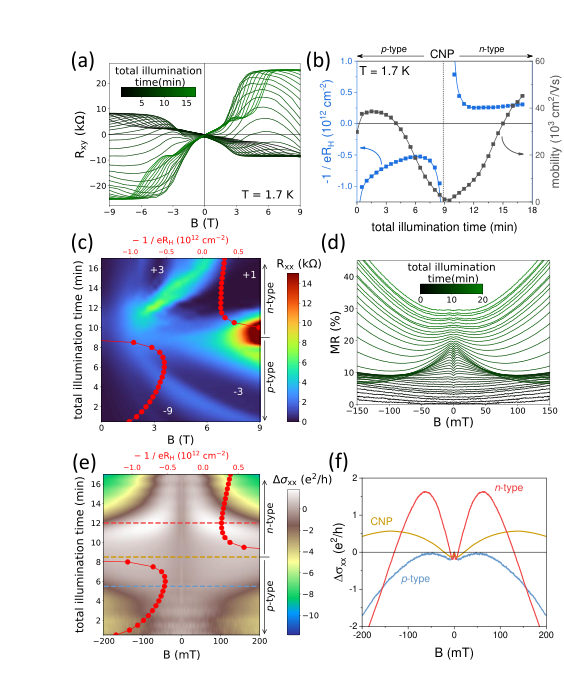
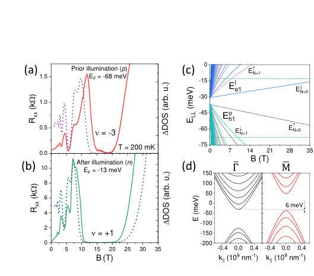
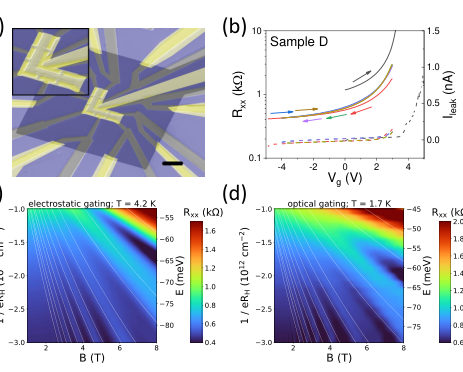
Summary. This paper demonstrates that persistent photoconductivity can be used as a powerful, non-contact tool to optically gate the Fermi level in (Pb,Sn)Se quantum wells. This allows for the reversible tuning of conductivity type and valley polarization, providing a versatile platform for reconfigurable valleytronic devices.
Why it may be interesting. not directly relevant
Main problem. The challenge of controlling charge carrier density, conductivity type, and valley polarization in IV-VI topological crystalline insulators without complex device processing.
Main result. Persistent photoconductivity (PPC) enables a 'contactless' optical gating method to switch (Pb,Sn)Se quantum wells from a 3-fold degenerate M-valley hole gas to a 1-valley polarized Gamma-valley electron gas.
Method. Magnetotransport measurements (up to 35 T) and spectral studies using LED and xenon lamp illumination to induce and control persistent changes in carrier density.
Model / system. (Pb,Sn)Se/(Pb,Eu)Se quantum wells grown on (111)-oriented BaF2 substrates, characterized by a type-I band alignment and tunable Fermi level via light-induced carrier transfer.
Key observables. Hall resistance (sign inversion), longitudinal resistance, carrier density, Hall mobility, valley polarization, and Shubnikov-de Hall oscillations.
Important parameters / regimes. Temperature (4 K to 300 K), magnetic field (up to 35 T), photon energy (0.25 to 3.1 eV), and Sn/Eu concentrations.
Assumptions / limitations. The PPC mechanism assumes specific energy positions for donor and acceptor defect states (likely Pb vacancies) in the barrier and quantum well.
Figures summary. Schematic of optical gating setup; Brillouin zone projection showing valley shifts; evolution of Hall resistance and carrier density; spectral response of photoconductivity; and a proposed mechanism for electron/hole transfer.
Paper structure. Introduction to the tuning problem, experimental setup and material growth, demonstration of PPC-induced conductivity switching, magnetotransport analysis of valley polarization, spectral dependence and reversal mechanism, and discussion of the defect-based model.
The ability to tune the Fermi level of semiconductors is at the heart of modern electronics. Here, we demonstrate that persistent photoconductivity (PPC) enables tuning of carrier density, conductivity type, and, consequently, the valley polarization in (Pb,Sn)Se/(Pb,Eu)Se quantum wells. Illumination of these samples induces Fermi level shifts that convert the system from a threefold-degenerate $\bar{M}$-valley two-dimensional hole gas to a single $\barΓ$-valley-polarized electron gas with similar values of mobility. The optically induced state persists for more than $10^{3}$ minutes at cryogenic temperatures and enables stepwise optical gating without the need for device processing. These transitions are confirmed by the sign inversion of the Hall slope and the modification of quantum Hall plateau degeneracies measured in magnetic fields up to 35 T. Landau level $k\cdot p$ model calculations quantitatively reproduce the experimental data. Furthermore, studies of weak-field magnetoresistance demonstrate the significance of quantum localization phenomena at the transition between the weakly and strongly localized regimes in compensated narrow-gap semiconductors. Spectral studies allow us to identify the critical role of the barrier material and determine the photon energies that can reverse the PPC effect. The persistent light-induced upward shift of the Fermi level in the $p$-type quantum well is explained in terms of specific energy positions of donor and acceptor defect states in the studied system. Our results demonstrate that PPC is a powerful optical gating tool for the IV-VI quantum wells, a versatile platform for reconfigurable valleytronic architectures.
Authors: Xijun Deng, Stephane Lafortune, Zhisu Liu
Type: theory · Category: other · PDF: https://arxiv.org/pdf/2605.19906v1
Analysis basis: full PDF text, analyzed in chunks
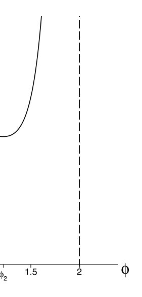
Summary. This paper provides a rigorous mathematical proof for the orbital stability of certain smooth solitary waves in the Fornberg-Whitham equation. By analyzing the spectral properties of the system, the authors identify a specific range of wave speeds where these waves remain stable. This contributes to the understanding of nonlinear wave dynamics in non-integrable shallow water models.
Why it may be interesting. not directly relevant
Main problem. The paper investigates the orbital stability of smooth traveling solitary wave solutions to the Fornberg-Whitham (FW) equation.
Main result. The authors prove that smooth solitary waves are orbitally stable for wave speeds in the interval c in (1, c0), where c0 is approximately 1.3333289.
Method. The study employs the Grillakis-Shatah-Strauss (GSS) stability framework, utilizing variational approaches, spectral analysis of the linearized operator, and numerical determination of a critical threshold.
Model / system. The Fornberg-Whitham equation, a non-integrable, nonlocal model for unidirectional shallow water waves that captures wave steepening and breaking via a Helmholtz operator.
Key observables. Orbital stability of solitary waves and the spectral properties (essential and point spectrum) of the linearized operator.
Important parameters / regimes. Wave speed (c), background parameter (k), and the critical threshold (c0 approx 1.3333289).
Assumptions / limitations. The analysis assumes the existence of smooth traveling waves and is restricted to the H1(R) space; it also assumes local well-posedness for the perturbed solutions.
Figures summary. Figure 1 shows a graph of the potential function F versus the wave profile phi, illustrating the critical points required for a homoclinic orbit.
Paper structure. The paper begins with the introduction of the FW equation, moves to the existence and characterization of smooth solitary waves, performs spectral analysis of the linearized operator, and concludes with the proof of orbital stability using the GSS framework.
The Fornberg-Whitham (FW) equation was introduced by Fornberg and Whitham [Fornberg and Whitham, Phil. Trans. R. Soc. Lond. A (1978)] as a nonlocal model for unidirectional shallow water waves capable of capturing wave steepening and breaking. Despite its similarities with integrable shallow-water equations, the FW equation is not completely integrable. Nevertheless, the FW equation is part of the family of peakon-type models as it supports peaked traveling wave solutions. In this paper, we consider smooth solitary wave solutions to the FW equation. We use a variational approach to show that some are orbitally stable.
Authors: Hrach Nikoghosyan, Gor Nikoghosyan
Type: theory · Category: other · PDF: https://arxiv.org/pdf/2605.19686v1
Analysis basis: full PDF text, analyzed in chunks
Summary. This paper explores how the shape of ellipsoidal nanoclusters affects how electrons interact with optical phonons. It reveals that the specific geometry leads to anisotropic phonon emission and non-monotonic changes in coupling strength as the cluster size varies.
Why it may be interesting. not directly relevant
Main problem. The study investigates how the specific geometry of highly oblate ellipsoidal nanoclusters influences electron-vibrational coupling and carrier relaxation processes via polar optical phonon scattering.
Main result. The research demonstrates that the geometry of the nanocluster dictates selection rules and relaxation rates, showing a non-monotonic size dependence of the coupling coefficient and identifying that chiral phonon emission is forbidden in symmorphic zinc blende structures.
Method. The authors use first-order perturbation theory and an analytical approach involving the separation of variables in a quasi-spherical coordinate system to solve the Schrödinger equation and calculate interaction matrix elements.
Model / system. The system consists of highly oblate ellipsoids of revolution (quantum dots) embedded in a microresonator, modeled using a continuous medium approach and a rectangular potential well of finite depth.
Key observables. Intraband relaxation rate, phonon emission direction anisotropy, and the electron-phonon coupling coefficient.
Important parameters / regimes. Degree of oblateness (epsilon), quantum numbers (n, m, l), phonon energy (LO), and microresonator dimensions (a_MR, c_MR).
Assumptions / limitations. The model assumes a symmorphic lattice structure, neglects phonon reflection from boundaries, neglects acoustic phonon relaxation, and assumes the electronic matrix element is constant within a unit cell.
Figures summary. Figure 1 shows a schematic of the intraband relaxation transition; Figure 2 plots the coupling coefficient dependence on microresonator size, illustrating interaction maxima.
Paper structure. The paper begins by defining the interaction Hamiltonian and coordinate system, proceeds to derive the interaction matrix elements using separation of variables, analyzes symmetry-based selection rules, and concludes with the discussion of size-dependent coupling and anisotropy.
The influence of the specific geometry of three-dimensional confinement on electron- vibrational coupling in InAs/GaAs nanoclusters shaped as highly oblate ellipsoids of revolution is considered. Optical phonon relaxation processes are analyzed taking into account the law of conservation of angular momentum projection and the spatial symmetry of the dimensional confinement. The conditions for the emission of chiral optical phonons carrying orbital angular momentum along the structure's growth axis are analyzed. Intraband relaxation transitions with the emission of LO phonons with zero angular momentum, with characteristic anisotropy of the emission direction, leading to nonmonotonic size dependences for the e-ph coupling coefficient, are considered.
Authors: Jose A. P. M. Devienne, Ziwei Liu, Clancy Z. Jiang, Nicholas J. Tosca, Thomas Ginnis, Dimitar D. Sasselov, Richard J. Harrison, S. Furkan Ozturk
Type: both · Category: other · PDF: https://arxiv.org/pdf/2605.19387v1
Analysis basis: full PDF text, analyzed in chunks
Summary. This paper demonstrates that magnetite produced via prebiotic chemical pathways possesses magnetic domain structures capable of irreversible remagnetization when interacting with chiral molecules. This discovery suggests a robust mechanism where magnetic minerals could have helped stabilize and amplify the emergence of biological homochirality on early Earth.
Why it may be interesting. not directly relevant
Main problem. Investigating whether magnetite formed under prebiotic conditions can act as a persistent chiral agent to enable and amplify biomolecular homochirality via the Chiral-Induced Spin Selectivity (CISS) effect.
Main result. Prebiotically synthesized magnetite is dominated by single-vortex and multi-vortex states that undergo irreversible, exchange-driven remagnetization when interacting with spin-polarized molecules, providing a mechanism for a self-reinforcing chiral-magnetic feedback loop.
Method. The study combines geochemically plausible synthesis of magnetite (UV-driven and nitrite-mediated) with magnetic characterization (FORC, hysteresis) and 3D micromagnetic simulations (MERRI package).
Model / system. The system consists of prebiotic magnetite particles (SD, SV, MV, and MD states) interacting with spin-polarized homochiral compounds. The model uses a continuum micromagnetic approach incorporating an interfacial exchange-like surface energy density to represent the CISS effect.
Key observables. Magnetic domain states (SD, SV, MV, MD), coercivity, remanence, First-Order Reversal Curves (FORC), and magnetization switching/reversal.
Important parameters / regimes. Particle size (20 nm to 1.0 um), exchange energy (0.1 to 30 meV), molecular density, and geomagnetic field strength (uT-scale).
Assumptions / limitations. Simulations are quasi-static and do not explicitly include thermal activation; the molecular layer is modeled as a coarse-grained interfacial energetic bias.
Figures summary. Fig 1: Prebiotic lake environment; Fig 2: Magnetite synthesis pathways; Fig 3: Progression of magnetic domain states and experimental FORC data; Fig 4: Simulation of irreversible magnetization changes and exchange energy scales.
Paper structure. Introduction to homochirality origins, description of prebiotic synthesis pathways, characterization of resulting magnetite magnetic domains, micromagnetic modeling of spin-polarized interactions, and discussion of the proposed prebiotic feedback loop.
The emergence of biomolecular homochirality requires both an initial symmetry-breaking event and a mechanism to amplify and preserve a chiral imbalance. Magnetic minerals have been shown to function as chiral agents through the chiral-induced spin selectivity (CISS) effect and may have enabled homochirality on early Earth, yet the magnetic properties of magnetite formed under realistic prebiotic conditions remain unexplored. Here we show that magnetite synthesized through two geochemically plausible pathways - UV-driven photo-oxidation and nitrite-mediated oxidation of Fe(II) - produces particles dominated by single-vortex and multi-vortex magnetic domain states. Magnetic measurements and electron microscopy confirm that these populations differ markedly from the nano-fabricated thin-film substrates conventionally used in previous CISS experiments. Using 3D micromagnetic simulations, we demonstrate that single-domain and vortex-state grains undergo irreversible, exchange-driven re-magnetization when interacting with spin-polarized homochiral compounds. This magnetic irreversibility provides a robust mechanism for storing and reinforcing weak chiral bias, suggesting that prebiotic magnetite could have contributed to the emergence and stabilization of persistent chiral bias on the early Earth.
Authors: Javier D. Fuhr, Polina M. Sheverdyaeva, Paolo Moras, J. Esteban Gayone, Hugo Ascolani
Type: both · Category: other · PDF: https://arxiv.org/pdf/2605.20095v1
Analysis basis: full PDF text, analyzed in chunks
Summary. This paper demonstrates that replacing heavy atoms with lighter isovalent elements in a 2D alloy can enhance spin polarization. By studying a Bi-Sb alloy on Ag(111), the authors provide a design principle for engineering Rashba-related systems via controlled chemical substitution.
Why it may be interesting. not directly relevant
Main problem. Investigating how isovalent substitution of a heavier atom (Bi) with a lighter one (Sb) affects spin polarization and inversion symmetry breaking in a 2D surface alloy.
Main result. Incorporating Sb into a Bi-rich layer induces in-plane and out-of-plane asymmetries in the electronic potential, significantly enhancing spin splitting and spin polarization.
Method. The study combines angle-resolved photoemission spectroscopy (ARPES) and X-ray photoelectron spectroscopy (XPS) with density functional theory (DFT) calculations.
Model / system. A single-layer Bi(1-x)Sb(x) alloy with a rectangular 3xsqrt(3) reconstruction grown on an Ag(111) substrate.
Key observables. Surface-state band dispersion, spin polarization (in-plane and out-of-plane), and core-level binding energy shifts.
Important parameters / regimes. Bi-rich composition (approximately Bi2.8Sb1.2), 2/3 ML total coverage, and the atomic number difference between Bi and Sb.
Assumptions / limitations. The electronic structure can be modeled using a rectangular four-atom unit cell, and the effects of the substrate can be captured via an orbital-filtering model.
Figures summary. ARPES maps showing energy vs. momentum and identification of S1, S2, and S4 bands, along with constant-energy maps showing Fermi surface features and a saddle point.
Paper structure. The paper introduces the experimental system, details the structural and compositional characterization via STM, LEED, and XPS, presents the electronic structure mapping via ARPES, and uses DFT to explain the spin-polarization enhancement through symmetry breaking.
Co-adsorption of Bi and Sb on Ag(111) at room temperature yields a single-layer Bi(1-x)Sb(x) alloy with a rectangular 3xsqrt(3) structure containing four atoms per unit cell (2/3 ML total coverage) and lacking long-range chemical order. We present an electronic structure study of this system combining angle-resolved photoemission spectroscopy (ARPES) and density functional theory (DFT) calculations. To investigate the effect of inversion symmetry breaking induced by substituting a heavier atom (Bi) with a lighter isoelectronic one (Sb) within a fixed crystallographic framework, we focused on a Bi-rich composition. ARPES measurements reveal four surface-state bands, in good agreement with DFT calculations based on a rectangular four-atom overlayer unit cell. DFT calculations further show that Sb incorporation induces both in-plane and out-of-plane asymmetries in the electronic potential, leading to sizable spin splitting and spin polarization of the overlayer bands. Although these effects are partially reduced by interaction with the substrate, they remain significant. Our work illustrates, through a concrete model system, a general principle: incorporating a lighter isovalent element can significantly enhance spin polarization, potentially offering a useful design guideline for understanding and engineering Rashba-related systems.
Authors: E. Wang, M. Chavez-Cervantes, J. Satapathy, T. Matsuyama, G. Meier, X. Zhang, L. You, F. Marijanovic, J. B. Curtis, E. Demler, A. Cavalleri
Type: both · Category: other · PDF: https://arxiv.org/pdf/2605.19675v1
Analysis basis: full PDF text, analyzed in chunks
Summary. This paper demonstrates a superconducting diode effect that operates at much higher speeds (up to 100 GHz) than traditional vortex-based methods. By utilizing current-induced Doppler shifts to trigger asymmetric Cooper pair depairing, the researchers achieved extremely low-energy, high-frequency rectification. This discovery provides a foundation for ultra-fast and energy-efficient superconducting logic and THz electronics.
Why it may be interesting. not directly relevant
Main problem. The speed and dissipation limitations of conventional vortex-based superconducting diodes, which are restricted to MHz frequencies and are inherently dissipative.
Main result. Discovery of an ultrafast (100 GHz) superconducting diode effect in NbN films driven by Cooper pair depairing via Doppler-shifted quasiparticle spectra, achieving energy dissipation as low as a few fJ per cycle.
Method. Experimental use of picosecond current pulses generated via photoconductive switches and theoretical modeling using the Usadel equation within the BCS framework in the dirty limit.
Model / system. NbN (Niobium Nitride) thin films integrated into a coplanar waveguide, subject to a quasi-DC bias current and external magnetic field to induce non-reciprocal transport.
Key observables. Transmittance of picosecond pulses, critical current density (Jc), and energy dissipation per cycle.
Important parameters / regimes. 100 GHz signal frequency, 2 ps pulse widths, 10 ns polarity switching, and energy dissipation scales ranging from fJ to aJ.
Assumptions / limitations. The system is in the dirty limit of the BCS theory, and a finite Dynes broadening is used for numerical stability in simulations.
Figures summary. Figure 1 compares vortex-based vs. depairing-based transport; Figure 2/4 shows the Bogoliubov quasiparticle spectrum shift and simulated asymmetric depairing thresholds; Supplementary figures detail device geometry, temperature dependence, and calibration.
Paper structure. The paper introduces the limitation of vortex diodes, presents the experimental discovery of ultrafast depairing-based non-reciprocity, provides a microscopic theoretical validation using the Usadel equation, and concludes with energy dissipation and scalability analysis.
Nonreciprocal transport is generally observed in superconductors in which time reversal and inversion symmetries are simultaneously broken. This effect, which may become one of the backbones for future superconducting electronics, arises because of asymmetric vortex transport in a magnetic field. However, vortex transport is also intrinsically dissipative and limited in speed. Here, we report on the discovery of ultrafast non-reciprocal transport in centrosymmetric superconductors. For NbN films biased with a quasi-DC supercurrent, picosecond current pulses with the same sign as the bias experience resistive impedance, whereas pulses of opposite polarity encounter an inductive response. Strikingly, the effect is at least three orders of magnitude faster than in conventional superconducting diodes, limited only by ultrafast current-induced depairing. We demonstrate rectification of a 100 GHz signal, with dissipation levels of a few fJ per cycle. We foresee potential for superconducting logic elements, operating at THz bit rates with aJ energy dissipation per operation.
Authors: Katsunori Wakabayashi, Souren Adhikary, Tomoaki Kameda
Type: both · Category: other · PDF: https://arxiv.org/pdf/2605.19212v1
Analysis basis: full PDF text, analyzed in chunks
Summary. This paper shows that the transconductance in multilayer WSe2 transistors can be used to electrically probe the redistribution of carriers between different energy valleys. It identifies a specific nonlinear signature that distinguishes intrinsic valley thermodynamics from common device defects like interface traps. This provides a new way to study internal electronic degrees of freedom in 2D semiconductor devices.
Why it may be interesting. not directly relevant
Main problem. Identifying the physical origin of non-monotonic transconductance in multilayer WSe2 transistors and distinguishing intrinsic valley-related transport from extrinsic effects like trap-state filling.
Main result. The authors demonstrate that transconductance carries a nonlinear signature of inter-valley carrier redistribution between K and Gamma valleys, which can serve as an electrical probe of valley thermodynamics.
Method. The study uses a theoretical framework decomposing transconductance into charge-accumulation and valley-crossover terms, combined with numerical differentiation of ID-VGS curves and statistical modeling using 2D Fermi-Dirac statistics.
Model / system. Multilayer WSe2 (bilayer and trilayer) Gate-All-Around (GAA) Field-Effect Transistors involving a two-valley model with K and Gamma valence-band maxima.
Key observables. Transconductance (gm), valley susceptibility (xv), valley fraction (f_Gamma), and subthreshold swing (SS).
Important parameters / regimes. Energy separation (Delta_K_Gamma), effective mass ratio (r_DOS), temperature (T), and the dimensionless parameter x = Delta_K_Gamma / k_B T.
Assumptions / limitations. Quasi-equilibrium assumption where intervalley scattering time is much shorter than carrier transit time; 2D Fermi-Dirac statistics; Boltzmann limit treatment for valley susceptibility.
Figures summary. Figure 3 shows valley susceptibility and the valley-crossover transconductance component for bilayer and trilayer WSe2, illustrating suppression in bilayers and enhancement in trilayers.
Paper structure. The paper introduces the problem of non-monotonic transconductance, develops a theoretical model for valley-crossover, provides a diagnostic method to distinguish intrinsic from extrinsic effects, and quantifies the thermodynamic response via valley susceptibility.
Transconductance is a central figure of merit in field-effect transistors, typically governed by charge accumulation and carrier mobility. In multilayer WSe$_2$ transistors, however, it is shown to carry a nonlinear transport signature of inter-valley carrier redistribution between the $K$ and $Γ$ valleys. This valley-crossover contribution suppresses transconductance in bilayer WSe$_2$ and reverses sign in trilayer, while remaining absent in single-valley systems. Unlike extrinsic mechanisms such as trap-state filling or contact resistance, the anomaly leaves the subthreshold swing unchanged and cannot be reproduced within conventional single-valley transport models. Introducing the valley susceptibility $χ_v \equiv \partial f_Γ/\partial V_{\rm GS}$, bounded by an intrinsic thermodynamic limit $(4k_BT)^{-1}$, we quantify this response and show that it reaches ${\sim}0.20\,\mathrm{V}^{-1}$ in bilayer WSe$_2$ near threshold at room temperature. The sign, magnitude, and temperature dependence of the anomaly provide directly measurable fingerprints of valley thermodynamics, establishing transconductance as an electrical probe of internal electronic degrees of freedom and revealing a previously hidden nonlinear response in standard transistor measurements.